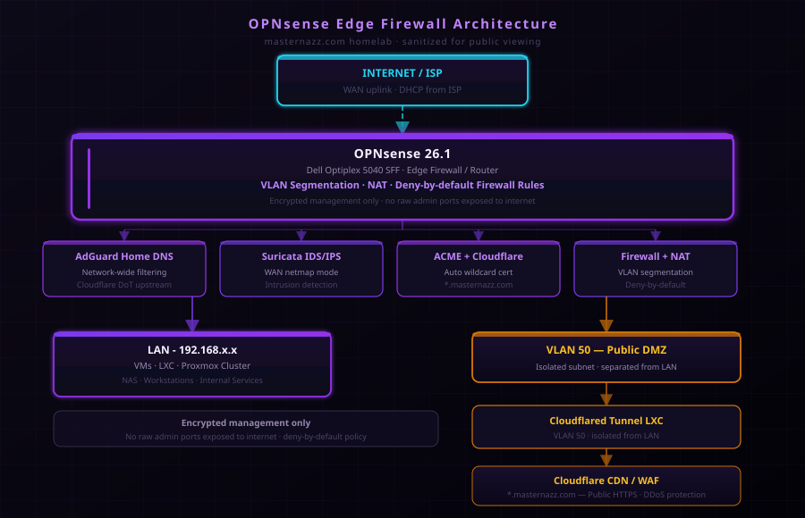

AdGuard + Encrypted Upstream
Replaced Unbound with AdGuard Home for network-wide DNS filtering with ad and malware blocking. Upstream queries go over Cloudflare DNS-over-TLS so ISP-level DNS snooping is eliminated.
Project | Network Security
OPNsense 26.1 deployed on a Dell Optiplex 5040 SFF as the sole edge device: routing, DHCP, DNS filtering, VLAN segmentation, wildcard TLS, IDS on WAN, and a DMZ-isolated Cloudflare Tunnel for public ingress — no raw management ports on the internet.

Replaced Unbound with AdGuard Home for network-wide DNS filtering with ad and malware blocking. Upstream queries go over Cloudflare DNS-over-TLS so ISP-level DNS snooping is eliminated.
Cloudflare Tunnel connector runs in a dedicated Public DMZ VLAN, isolated from the LAN. Public HTTPS traffic routes through Cloudflare → tunnel → reverse proxy without exposing internal addressing or management ports.
Suricata runs in netmap mode on the WAN interface for wire-rate intrusion detection. Alerts feed into Wazuh for centralized analysis and correlation with host-level events.
I built and operate a real edge firewall — not a lab simulation. I know how traffic flows from WAN to service, why VLAN isolation matters for tunnel placement, and how to keep management surfaces off the internet. The IDS, DNS filtering, and automated cert pipeline are all production habits, not checkboxes.
Project pages that build on top of the network security foundation.
A production-grade virtualization lab: Proxmox cluster, Cisco switching, and Synology storage.
View project ->Three-node cluster — IBM M4, Dell R610, Dell R410 — running 22 VMs and LXC containers.
View project ->Active security monitoring and log aggregation for endpoint behavior and compliance.
View project ->Authentik implementation for SSO, OIDC, and LDAP across the lab infrastructure.
View project ->Open to Junior Network Administrator, SOC Analyst, NOC, MSP, Help Desk, IT Support, and Cybersecurity Internship opportunities.
Email: NazeemDickey@gmail.com | Boynton Beach, FL